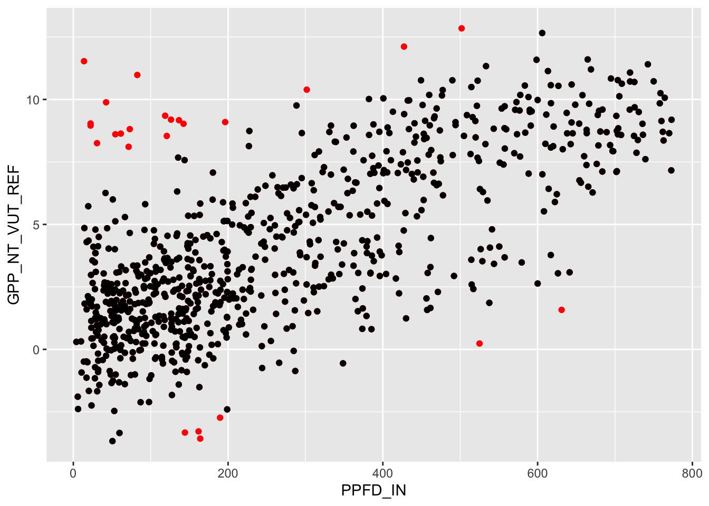
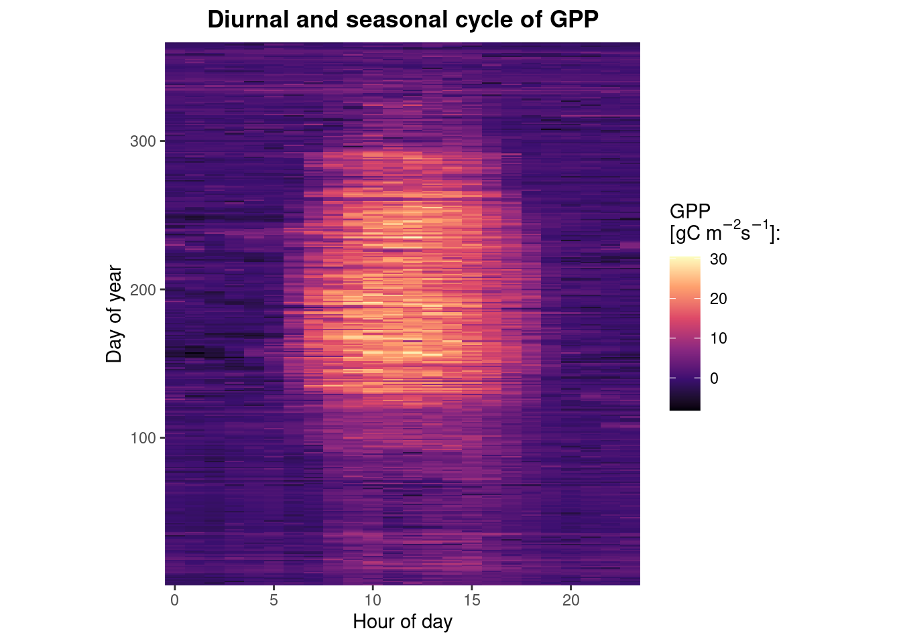
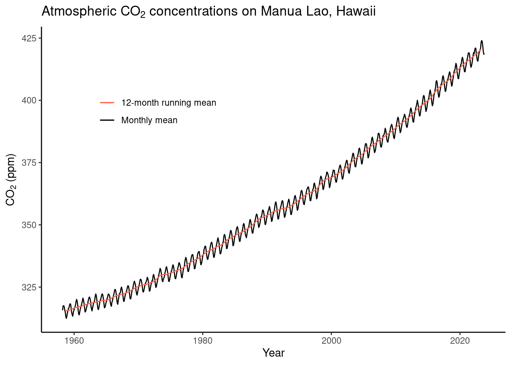
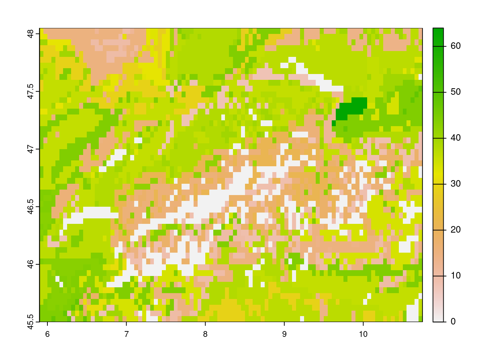
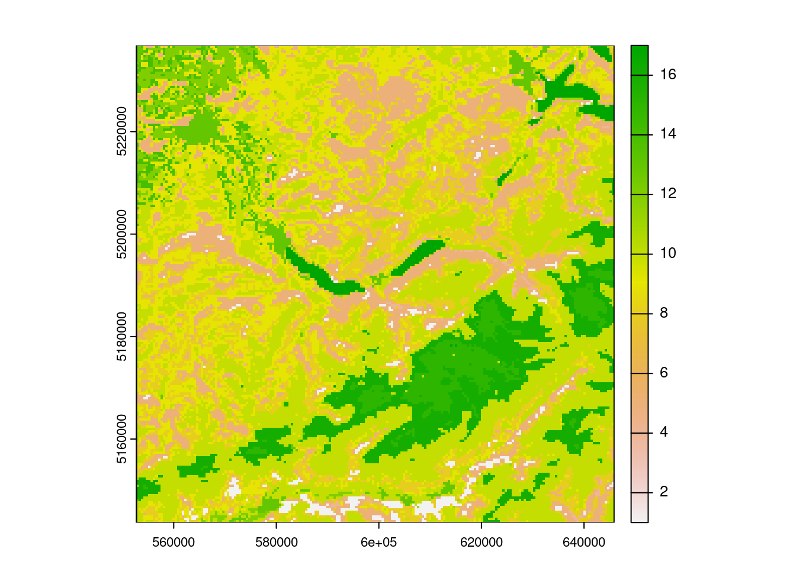
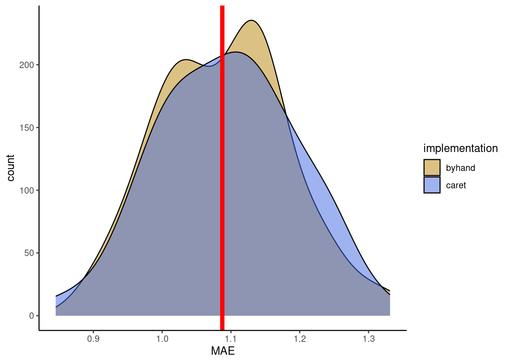
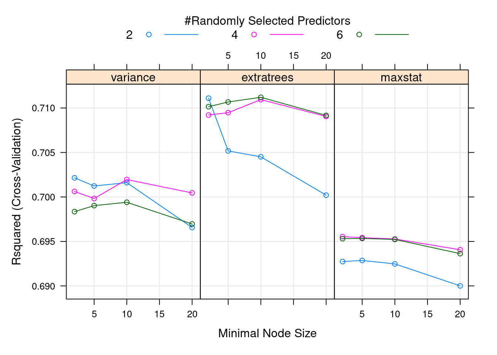
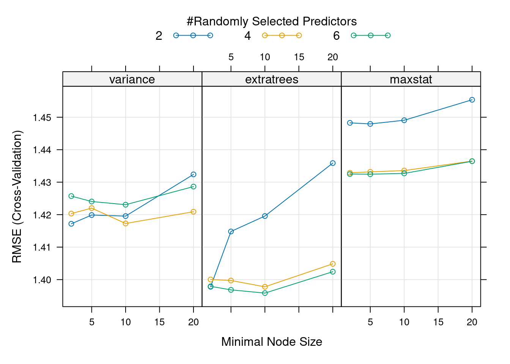

A Solutions
A.1 Getting Started
Dimensions of a circle
- Given the radius of a circle write a few lines of code that calculates its area and its circumference. Run your code with different values assigned of the radius.
radius <- 1
area <- pi * radius^2
circum <- 2 * pi * radius- Print the solution as text.
print(paste("Radius:", radius, " Circumference:", circum))## [1] "Radius: 1 Circumference: 6.28318530717959"Sequence of numbers
Generate a sequence of numbers from 0 and \(\pi\) as a vector with length 5.
seq(0, pi, length.out = 5)## [1] 0.0000000 0.7853982 1.5707963 2.3561945 3.1415927Gauss sum
Rumors have it that young Carl Friedrich Gauss was asked in primary school to calculate the sum of all natural numbers between 1 and 100. He did it in his head in no time. We’re very likely not as intelligent as young Gauss. But we have R. What’s the solution?
sum(1:100)## [1] 5050Gauss calculated the sum with a trick. The sum of 100 and 1 is 101. The sum of 99 and 2 is 101. You do this 50 times, and you get \(50 \times 101\). Demonstrate Gauss’ trick with vectors in R.
vec_a <- 1:50
vec_b <- 100:51
vec_c <- vec_a + vec_b
# each element is 101
vec_c## [1] 101 101 101 101 101 101 101 101 101 101 101 101 101 101 101 101 101 101 101
## [20] 101 101 101 101 101 101 101 101 101 101 101 101 101 101 101 101 101 101 101
## [39] 101 101 101 101 101 101 101 101 101 101 101 101# the length of vectors is fifty. 50 * 101
sum(vec_c)## [1] 5050Magic trick algorithm
Define a variable named x that contains an integer value and perform the following operations in sequence:
- Redefine
xby adding 1. - Double the resulting number, over-writing
x. - Add 4 to
xand save the result asx. - Redefine
xas half of the previous value ofx. - Subtract the originally chosen arbitrary number from
x.
Print x. Restart the algorithm defined above by choosing a new arbitrary natural number.
x <- -999 # arbitrary integer
x_save <- x # save for the last step
x <- x + 1
x <- x * 2
x <- x + 4
x <- x / 2
x - x_save## [1] 3Vectors
Print the object datasets::rivers and consult the manual of this object.
- What is the class of the object?
- What is the length of the object?
- Calculate the mean, median, minimum, maximum, and the 33%-quantile across all values.
class(datasets::rivers)## [1] "numeric"length(datasets::rivers)## [1] 141mean(datasets::rivers)## [1] 591.1844quantile(datasets::rivers, probs = 0.33)## 33%
## 342Data frames
Print the object datasets::quakes and consult the manual of this object.
- Determine the dimensions of the data frame using the respective function in R.
- Extract the vector of values in the data frame that contain information about the Richter Magnitude.
- Determine the value largest value in the vector of event magnitudes.
- Determine the geographic position of the epicenter of the largest event.
dim(datasets::quakes)## [1] 1000 5vec <- datasets::quakes$mag
max(vec)## [1] 6.4idx <- which.max(vec) # index of largest value
# geographic positions defined by longitude and latitude (columns long and lat)
datasets::quakes$long[idx]## [1] 167.62datasets::quakes$lat[idx]## [1] -15.56A.2 Programming primers
Gauss variations
# for-loop to compute sum from 1 - 100
sum <- 0
for (i in 1:100){
sum <- sum + i # for-loop iterating from 1 to 100
}
print(sum)## [1] 5050# while-loop to compute sum from 1 - 100
loop_status <- TRUE
counter <- 0
sum <- 0
while (loop_status) { # while-loop is repeated as long as loop_status is true
counter <- counter + 1
sum <- sum + counter
if (counter == 100) loop_status <- FALSE
}
print(sum)## [1] 5050# Initiate sum variable
sum <- 0
# Go through loop from 1 to 100
for (i in seq(100)) {
# Check if the current number a muliple of three and seven
# The modulo operator '%%' returns the remainder of a division
if (i %% 3 == 0 && i %% 7 == 0 ) {
sum <- sum + i
}
}
print(paste0("The sum of multiples of 3 and 7 within 1-100 is: ", sum))## [1] "The sum of multiples of 3 and 7 within 1-100 is: 210"Nested loops
mymat <- matrix(c(6, 7, 3, NA, 15, 6, 7,
NA, 9, 12, 6, 11, NA, 3,
9, 4, 7, 3, 21, NA, 6,
rep(NA, 7)),
nrow = 4, byrow = TRUE)
myvec <- c(8, 4, 12, 9, 15, 6)# Loop over the rows in `mymat`.
for (i in 1:nrow(mymat)){
# Loop over the columns in `mymat`.
for (j in 1:ncol(mymat)){
# Check if current value is missing, if so overwrite with max in 'myvec'
if (is.na(mymat[i,j])){
mymat[i,j] <- max(myvec)
}
}
myvec <- myvec[-which.max(myvec)] # update the vector removing the maximum value
}
mymat## [,1] [,2] [,3] [,4] [,5] [,6] [,7]
## [1,] 6 7 3 15 15 6 7
## [2,] 12 9 12 6 11 12 3
## [3,] 9 4 7 3 21 9 6
## [4,] 8 8 8 8 8 8 8Interpolation
# Set up vector as required in the exercise
vec <- rep(NA, 100) # initialize vector of length 100 with NA
vec[1:25] <- 6 # populate first 25 elements of 'vec' with 6.
vec[66:100] <- -20 # populate elements 66:100 with -20.
# Determine index of last non-missing value before gap
last_non_na <- 1
while (!is.na(vec[last_non_na+1])) last_non_na <- last_non_na + 1
# determine index of first non-missing value after gap
first_non_na <- last_non_na + 1
while (is.na(vec[first_non_na])) first_non_na <- first_non_na + 1
# Get the increment that is needed for interpolation
last_value <- vec[last_non_na] # Last non-NA value
first_value <- vec[first_non_na] # First non-NA value
delta <- (last_value - first_value) / (last_non_na - first_non_na) # Change in y over change in x
# fill missing values incrementally
for (i in 2:length(vec)){
if (is.na(vec[i])) vec[i] <- vec[i-1] + delta
}
plot(vec)
# or short using the approx() function:
vec <- rep(NA, 100) # initialize vector of length 100 with NA
vec[1:25] <- 6 # populate first 25 elements of 'vec' with 6.
vec[66:100] <- -20 # populate elements 66:100 with -20.
vec <- approx(1:100, vec, xout = 1:100)
plot(vec)
A.3 Data wrangling
Star wars
{dplyr} comes with a toy dataset dplyr::starwars (just type it into the console to see its content). Have a look at the dataset with View(). Play around with the dataset to get familiar with the {tidyverse} coding style. Use (possibly among others) the functions dplyr::filter(), dplyr::arrange(), dplyr::pull(), dplyr::select(), dplyr::desc() and dplyr::slice() to answer the following question:
- How many pale characters come from the planets Ryloth or Naboo?
dplyr::starwars |>
dplyr::filter(
skin_color == "pale" &
(homeworld == "Naboo" | homeworld == "Ryloth")
) |>
nrow() ## [1] 2- Who is the oldest among the tallest thirty characters?
dplyr::starwars |>
arrange(desc(height)) |>
slice(1:30) |>
arrange(birth_year) |>
slice(1) |>
pull(name)## [1] "IG-88"- What is the name of the shortest character and their starship in “Return of the Jedi”?
dplyr::starwars |>
unnest(films) |>
filter(films == "Return of the Jedi") |>
unnest(starships) |>
arrange(height) |>
slice(1) |>
select(name, starships)## # A tibble: 1 × 2
## name starships
## <chr> <chr>
## 1 Nien Nunb Millennium FalconAggregating
You have learned about aggregating in the {tidyverse}. Let’s put it in practice.
- Reuse the code in the tutorial to read, reduce, and aggregate the
half_hourly_fluxesdataset to the daily scale, calculating the following metrics across half-hourlyVPD_Fvalues within each day: mean, 25% quantile, and 75% quantile.
# read half hourly fluxes
half_hourly_fluxes <- readr::read_csv(
"data/FLX_CH-Lae_FLUXNET2015_FULLSET_HH_2004-2006.csv"
)
# Select only variables that we are interested in
half_hourly_fluxes <- half_hourly_fluxes |>
dplyr::select(
starts_with("TIMESTAMP"),
ends_with("_F"),
GPP_NT_VUT_REF,
NEE_VUT_REF_QC,
-starts_with("SWC_F_MDS_"),
-contains("JSB")
)
# Clean the datetime objects
# and aggregate to daily scale
daily_fluxes <- half_hourly_fluxes |>
dplyr::mutate(
date_time = lubridate::ymd_hm(TIMESTAMP_START),
date = lubridate::date(date_time)) |>
dplyr::group_by(date) |>
dplyr::summarise(
mean = mean(VPD_F),
q25 = quantile(VPD_F, probs = 0.25),
q75 = quantile(VPD_F, probs = 0.75)
)- Retain only the daily data for which the daily mean VPD is among the upper or the lower 10% quantiles.
# In two steps. First, get thresholds of the quantiles
thresholds <- quantile(daily_fluxes$mean, probs = c(0.1, 0.9))
# Then, filter data to be above/below the upper/lower quantiles and combine
daily_fluxes_sub <- daily_fluxes |>
# in lower 10% quantile
filter(mean < thresholds[1]) |>
mutate(qq = "lower") |> # add label
# combine
bind_rows(
daily_fluxes |>
# in upper 90% quantile
filter(mean > thresholds[2]) |>
mutate(qq = "upper")
)- Calculate the mean of the 25% and the mean of the 75% quantiles of half-hourly VPD within the upper and lower 10% quantiles of mean daily VPD.
daily_fluxes_sub |>
group_by(qq) |>
summarise(
q25_mean = mean(q25),
q75_mean = mean(q75)
)## # A tibble: 2 × 3
## qq q25_mean q75_mean
## <chr> <dbl> <dbl>
## 1 lower 0.0989 0.149
## 2 upper 6.56 15.2Patterns in data quality
The uncleaned dataset FLX_CH-Lae_FLUXNET2015_FULLSET_HH_2004-2006.csv holds half-hourly data that is sometimes of poor quality. Investigate whether NEE data quality is randomly spread across hours in a day by calculating the proportion of (i) actually measured data, (ii) good quality gap-filled data, (iii) medium quality data, and (iv) poor quality data within each hour-of-day (24 hours per day).
# using half_hourly_fluxes read above
daily_fluxes <- half_hourly_fluxes |>
mutate(TIMESTAMP_START = lubridate::ymd_hm(TIMESTAMP_START)) |>
mutate(hour_of_day = lubridate::hour(TIMESTAMP_START)) |>
group_by(hour_of_day) |>
summarise(n_measured = sum(NEE_VUT_REF_QC == 0),
n_good = sum(NEE_VUT_REF_QC == 1),
n_medium = sum(NEE_VUT_REF_QC == 2),
n_poor = sum(NEE_VUT_REF_QC == 3),
n_total = n()
) |>
mutate(f_measured = n_measured / n_total,
f_good = n_good / n_total,
f_medium = n_medium / n_total,
f_poor = n_poor / n_total,
)Interpret your findings: Are the proportions evenly spread across hours in a day?
# this is not asked for but interesting. More on data visualisation in Chapter 5
# you can also just look at values of df$f_measured over the course of a day (hod)
daily_fluxes |>
pivot_longer(c(f_measured, f_good, f_medium, f_poor),
names_to = "quality",
values_to = "fraction") |>
ggplot(aes(x = hour_of_day,
y = fraction * 100, # *100 to get percentages
color = quality)) +
geom_line(linewidth = 1.5) + # make lines bit bigger
theme_classic() + # Pick a nice theme
scale_color_brewer( # Pick a nice color palette
"Quality", # Give legend a title
labels = c("Good gap filled data", "Measured data", "Medium gap filled data", "Poor gap filled data"), # Give legend levels a label
palette = 3, # Pick color palette
direction = -1 # Inverse order of color palette
) +
labs(
title = "Temporal pattern of GPP quality",
y = "Fraction of total GPP entries [%]",
x = "Hour of Day"
)
Perform an aggregation of the half-hourly GPP data (variable GPP_NT_VUT_REF) to daily means of the unmodified data read from file FLX_CH-Lae_FLUXNET2015_FULLSET_HH_2004-2006.csv, and from cleaned data where only measured (not gap-filled) half-hourly data is kept and aggregated. This yields two data frames with daily GPP data. Calculate the overall mean GPP for the two data frames (across all days in the data frame). Are the overall mean GPP values equal? If not, why?
daily_fluxes_all <- half_hourly_fluxes |>
dplyr::mutate(
date_time = lubridate::ymd_hm(TIMESTAMP_START),
date = lubridate::date(date_time)
) |>
dplyr::group_by(date) |>
dplyr::summarise(
GPP_NT_VUT_REF = mean(GPP_NT_VUT_REF, na.rm = TRUE)
)
daily_fluxes_cleaned <- half_hourly_fluxes |>
dplyr::mutate(
date_time = lubridate::ymd_hm(TIMESTAMP_START),
date = lubridate::date(date_time)
) |>
dplyr::mutate(
GPP_NT_VUT_REF = ifelse(NEE_VUT_REF_QC == 0, GPP_NT_VUT_REF, NA)
) |>
dplyr::group_by(date) |>
dplyr::summarise(
GPP_NT_VUT_REF = mean(GPP_NT_VUT_REF, na.rm = TRUE)
)
# overall means
daily_fluxes_all |>
summarise(
GPP_NT_VUT_REF = mean(GPP_NT_VUT_REF, na.rm = TRUE)
)## # A tibble: 1 × 1
## GPP_NT_VUT_REF
## <dbl>
## 1 4.20daily_fluxes_cleaned |>
summarise(
GPP_NT_VUT_REF = mean(GPP_NT_VUT_REF, na.rm = TRUE)
)## # A tibble: 1 × 1
## GPP_NT_VUT_REF
## <dbl>
## 1 7.07A.4 Data Visualisation
Spurious data
In Section 3.2.10.2, we discovered that certain values of GPP_NT_VUT_REF in the half-hourly data half_hourly_fluxes (to be read from file data/FLX_CH-Lae_FLUXNET2015_FULLSET_HH_2004-2006.csv) are repeated with a spuriously high frequency. Determine all values of GPP_NT_VUT_REF that appear more than once in half_hourly_fluxes and label them as being “spurious”. Visualise the time series of the first two years of half-hourly GPP, mapping the information whether the data is spurious or not to the color aesthetic.
# Read and wrangle data
half_hourly_fluxes <- readr::read_csv("data/FLX_CH-Lae_FLUXNET2015_FULLSET_HH_2004-2006.csv") |>
# set all -9999 to NA
dplyr::mutate(across(where(is.numeric), ~na_if(., -9999))) |>
# interpret all variables starting with TIMESTAMP as a date-time object
dplyr::mutate_at(vars(starts_with("TIMESTAMP_")), lubridate::ymd_hm)## Rows: 52608 Columns: 235
## ── Column specification ────────────────────────────────────────────────────────
## Delimiter: ","
## dbl (235): TIMESTAMP_START, TIMESTAMP_END, TA_F_MDS, TA_F_MDS_QC, TA_ERA, TA...
##
## ℹ Use `spec()` to retrieve the full column specification for this data.
## ℹ Specify the column types or set `show_col_types = FALSE` to quiet this message.# determine spurious GPP_NT_VUT_REF values as those that are duplicated
# this creates a logical vector specifying whether the respective row has a
# duplicate
vec_spurious <- half_hourly_fluxes |>
# by keeping only one column, duplicated() determines duplications in
# that variable only
select(GPP_NT_VUT_REF) |>
duplicated()
# label spurious half-hourly data
half_hourly_fluxes <- half_hourly_fluxes |>
mutate(spurious = vec_spurious)
# visualise
ggplot(
data = half_hourly_fluxes |> slice(1:(48*365)),
aes(x = TIMESTAMP_START, y = GPP_NT_VUT_REF)) +
geom_line() +
geom_point(aes(color = spurious), size = 0.9) +
labs(x = "Time",
y = expression(paste("GPP (", mu,"mol CO"[2], " m"^-2, "s"^-1, ")"))) +
scale_color_viridis_d() + # inverse color scale is more intuitive here
theme_classic()
Then aggregate half-hourly to daily data, taking the mean of GPP_NT_VUT_REF and recording the proportion of underlying half-hourly data points that are “spurious”. Visualise the time series of daily GPP_NT_VUT_REF with the color scale indicating the proportion of spurious half-hourly data that was used for determining the respective date’s mean GPP.
# aggregate
daily_fluxes <- half_hourly_fluxes |>
mutate(date = lubridate::date(TIMESTAMP_START)) |>
group_by(date) |>
summarise(frac_spurious = sum(spurious)/48,
GPP_NT_VUT_REF = mean(GPP_NT_VUT_REF))
# visualise
ggplot(
data = daily_fluxes,
aes(x = date, y = GPP_NT_VUT_REF)) +
geom_line() +
geom_point(aes(color = frac_spurious), size = 0.9) +
labs(x = "Time",
y = expression(paste("GPP (", mu,"mol CO"[2], " m"^-2, "s"^-1, ")"))) +
scale_color_viridis_c(direction = -1) + # inverse color scale is more intuitive here
theme_classic()
Identifying Outliers
A key part of data cleaning is to detect and understand outliers. Visualisations can help. Your task here is to find outliers in GPP_NT_VUT_REF.
First, using the half-hourly fluxes data, determine “outliers” as those values of GPP_NT_VUT_REF that fall outside \(( Q_1 - 1.5 (Q_3 - Q_1)\) to \(Q_3 + 1.5 (Q_3 - Q_1)\). Plot GPP_NT_VUT_REF versus shortwave radiation and highlight outliers in red.
Hint: Use
boxplot.stats()to return a list containing a vector of the data points which lie beyond the extremes of the whiskers of the boxplot.
Hint: Use
scale_color_manual()to mannually define the color scale.
vec_outliers <- boxplot.stats(half_hourly_fluxes$GPP_NT_VUT_REF)$out
plot_data <- half_hourly_fluxes |>
mutate(outlier = GPP_NT_VUT_REF %in% vec_outliers)
plot_data |>
ggplot(aes(x = SW_IN_F, y = GPP_NT_VUT_REF, color = outlier)) +
geom_point() +
scale_color_manual("Outlier?", # Set title of legend
values = c("black", "red"), # Highlight in red
labels = c("No", "Yes") # Add labels to the legend
) +
labs(x = expression(paste("Shortwave radiation (W m"^-2, ")")),
y = expression(paste("GPP (", mu,"mol CO"[2], " m"^-2, "s"^-1, ")"))) +
theme_classic()
Now, we want to “control” for the influence of shortwave radiation on GPP and define outliers with respect to the distribution of residuals of the linear regression between the two variables. Relax the definition of what is considered an outlier by setting adjusting their definition to falling outside \(( Q_1 - 5 (Q_3 - Q_1)\) to \(Q_3 + 5 (Q_3 - Q_1)\). Again, plot GPP_NT_VUT_REF versus shortwave radiation and highlight outliers in red.
Hint: Fit the linear regression model as
lm(GPP_NT_VUT_REF ~ SW_IN_F, data = half_hourly_fluxes)and obtain the residuals from the object returned by thelm()function (see ‘Value’ in its help page).
Hint: The output of
boxplot.stats(x)is a list, containing an elementout.outis a named vector of the oulier values with names referring to the row numbers ofx. Useas.integer(names(boxplot.stats(x)$out))to get row numbers.
residuals <- lm(GPP_NT_VUT_REF ~ SW_IN_F, data = half_hourly_fluxes)$residuals
# # unclear why this doesn't work:
# vec_outliers <- boxplot.stats(residuals, coef = 5)$out
# plot_data <- half_hourly_fluxes |>
# mutate(outlier = GPP_NT_VUT_REF %in% vec_outliers)
# this works:
rowindex_outliers <- as.integer(names(boxplot.stats(residuals, coef = 5)$out))
plot_data <- half_hourly_fluxes |>
mutate(rowindex = dplyr::row_number()) |>
mutate(outlier = rowindex %in% rowindex_outliers)
plot_data |>
ggplot(aes(x = SW_IN_F, y = GPP_NT_VUT_REF, color = outlier)) +
geom_point() +
scale_color_manual("Outlier?", # Set title of legend
values = c("black", "red"), # Highlight in red
labels = c("No", "Yes") # Add labels to the legend
) +
labs(x = expression(paste("Shortwave radiation (W m"^-2, ")")),
y = expression(paste("GPP (", mu,"mol CO"[2], " m"^-2, "s"^-1, ")"))) +
theme_classic()
What do we see in this plot? We see that the red points, the outliers, fall outside the main point cloud of green points. The distribution of these outliers seems without systematic pattern or deviation. Nonetheless, it is good practice to go a step further and look at these data points in detail to find out whether they should be removed or not in your analysis. In later Chapters you will learn more on what disproportionate role outliers can play and how they may affect your statistical model and analysis.
Visualising diurnal and seasonal cycles of GPP
As explored in the previous Chapter’s exercises, GPP varies over diurnal and seasonal cycles. Create a publication-ready figure that visualises the mean diurnal cycle of GPP for each day-of-year (mean across multiple years). Make sure that the figure is properly labelled, and legible for readers with a color vision deficiency.
Hint: To get the diurnal and seasonal cycles, summarise the half-hourly data by the hour of the day and the day of the year simultaneously using multiple grouping variables within
group_by()and calculate mean values for GPP for each group.
Hint: Chose an appropriate visualisation that maps the hour-of-day to the x-axis and the day-of-year to the y-axis.
# Aggregate to hours-in-day for each day-in-year
fluxes_per_hod_doy <- half_hourly_fluxes |> # df from previous exercise
dplyr::mutate(
hour_day = lubridate::hour(TIMESTAMP_START), # hour of the day
day_year = lubridate::yday(TIMESTAMP_START)) |> # day of the year
dplyr::group_by(hour_day, day_year) |> # multiple grouping
dplyr::summarise(gpp = mean(GPP_NT_VUT_REF))
# Publication-ready raster plot
fluxes_per_hod_doy |>
# Specify aesthetics
ggplot(aes(x = hour_day,
y = day_year,
fill = gpp)) + # fill color of the raster
geom_raster() +
# Use a color scale that works also for color-blind people
scale_fill_viridis_c(option = "magma") +
# adjust the aspect ratio of the plotting region
coord_fixed(ratio = 0.18) +
# labels of each mapping axis, \n is a line break
labs(title = "Gross primary production",
subtitle = "Diurnal and seasonal cycle",
x = "Hour of day",
y = "Day of year",
fill = expression(paste(mu,"mol CO"[2], " m"^-2, "s"^-1))) +
# avoid having a small padding from the lowest values to the end of axes
scale_x_continuous(expand = c(0,0)) +
scale_y_continuous(expand = c(0,0))
Beautiful, isn’t it? We nicely see that on practically all days of the year we have the diurnal cycle of GPP which follows the sun’s cycle. And throughout a year, we see a rapid increase in GPP in the spring when all trees put out their leaves at once. After a highly productive summer, temperatures drop, sensescence kicks in and GPP gradually drops into its winter low.
Trend in carbon dioxide concentrations
This exercise explores the longest available atmospheric CO\(_2\) record, obtained at the Mauna Loa observatory in Hawaii. Atmospheric CO\(_2\) in the northern hemisphere is characterised by seasonal swings, caused by the seasonal course of CO\(_2\) uptake and release by the terrestrial biosphere. We’ve explored the seasonality of the CO\(_2\) uptake measured at one site (in Switzerland) extensively in this an previous chapters. Your task here is to calculate and visualise the long-term trend of CO\(_2\). Follow these steps:
- Download and read the monthly mean CO2\(_2\) data as a CSV file from here and read it into R.
# download the file
download.file(
"https://gml.noaa.gov/webdata/ccgg/trends/co2/co2_mm_mlo.csv",
"data/co2_mm_mlo.csv"
)
# read in the data
ml_co2 <- readr::read_csv(
"data/co2_mm_mlo.csv",
skip = 56
)
# wrangle the data
# interpret missing values
# rename to avoid white space in column name
ml_co2 <- ml_co2 |>
dplyr::mutate(across(where(is.numeric), ~na_if(., -9.99))) |>
dplyr::mutate(across(where(is.numeric), ~na_if(., -0.99))) |>
mutate(across(where(is.numeric), ~na_if(., -1))) |>
rename(year_dec = `decimal date`)- Make a simple graph for visualizing the monthly CO\(_2\) time series.
ml_co2 |>
ggplot() +
geom_line(aes(year_dec, average))
- Write a function that computes a 12-month running mean of the CO\(_2\) time series. The running mean for month \(m\) should consider values of \(m-5\) to \(m+6\). Define arguments for the function that let the user specify the width of the running mean “box” (i.e., setting the \(5\) and \(6\) to any other integer of choice)
# Write the running mean function
# variables are defined as:
# Input vector (vec)
# Number of elements to the left (left)
# Number of elements to the right (right)
running_mean <- function(
vec,
left,
right
) {
# Create an empty vector of the same length as the input data
vec_out <- rep(NA, length(vec))
# Loop over each position in the vector
for (idx in (left+1):(length(vec)-right)){
# Define start and end of the box to average over
startbox <- idx - left
endbox <- idx + right
vec_out[idx] <- mean(vec[startbox:endbox], na.rm = TRUE)
}
return(vec_out)
}
ml_co2 <- ml_co2 |>
mutate(
average_12m = running_mean(average, left = 5, right = 6)
)- Make a publication-ready figure that shows the monthly and the 12-month running mean time series of the CO\(_2\) record.
Hint: To automatically render the time axis with ggplot, you can create a time object by combining the year and month columns:
lubridate::ymd(paste(as.character(year), "-", as.character(month), "-15"))
# create a date object for nice plotting
plot_data <- ml_co2 |>
mutate(
date = lubridate::ymd(
paste(as.character(year),
"-",
as.character(month), "-15") # centering monthly mean on the 15th of each month
)
)
plot_data |>
ggplot() +
# monthly means
geom_line(
aes(
date,
average,
color = "Monthly mean"
)
) +
# running mean
geom_line(
aes(
date,
average_12m,
color = "12-month running mean"
)
) +
# Style the plot
theme_classic() +
theme(
legend.position = c(0.25, 0.75) # Move legend into the plot
) +
scale_color_manual(
"", # Omit legend title
values = c("tomato", "black"),
labels = c("12-month running mean", "Monthly mean")
) +
labs(
title = expression(
paste("Atmospheric CO"[2],
" concentrations on Manua Lao, Hawaii")
),
y = expression(paste("CO"[2], " (ppm)")),
x = "Year"
)## Warning: Removed 11 rows containing missing values (`geom_line()`).
A.5 Data Variety
Files and file formats
Reading and writing human readable files
While not leaving your R session, download and open the files at the following locations:
The below code shows how to read in the different demo data sets (CSV files). You will note that they all need separate settings, and that a given file extension isn’t necessarily a reflection of the content the file. Inspection of your read in data is therefore key.
# read in the first demo
demo_01 <- read.table(
"https://raw.githubusercontent.com/geco-bern/agds/main/data/demo_1.csv",
sep = ",",
header = TRUE
)
# read in second demo
demo_02 <- read.table(
"https://raw.githubusercontent.com/geco-bern/agds/main/data/demo_2.csv",
sep = " ",
header = TRUE
)
demo_03 <- read.table(
"https://raw.githubusercontent.com/geco-bern/agds/main/data/demo_3.csv",
sep = ";",
comment.char = "|",
header = TRUE,
)All the demo data sets are equal, except for their formatting. We can test if the content is identical by using the identical() function in R.
# compare 1 with 2
identical(demo_01, demo_02)## [1] TRUE# compare 2 with 3
identical(demo_02, demo_03)## [1] TRUE# Given transitive properties, demo_01 is identical to demo_03Once loaded into your R environment, combine and save all data as a temporary CSV file. Read in the new temporary CSV file, and save it as a JSON file in your current working directory.
You can combine the three datasets using the {dplyr}
bind_rows()function.
# combining all demo datasets
demo_all <- dplyr::bind_rows(demo_01, demo_02, demo_03)
# writing the data to a temporary CSV file
write.table(
demo_all,
file = file.path(tempdir(), "tmp_csv_file.csv"),
col.names = TRUE,
row.names = FALSE,
sep = ","
)
# or...
write.csv(
demo_all,
file.path(tempdir(), "tmp_csv_file.csv"),
row.names = FALSE
)
# read in the previous CSV file
demo_all_new <-read.table(
file.path(tempdir(), "tmp_csv_file.csv"),
header = TRUE,
sep = ","
)
# writing the data to a JSON file
jsonlite::write_json(demo_all_new, path = "./my_json_file.json")Reading and writing binary files
Download and open the following file:
https://raw.githubusercontent.com/geco-bern/agds/main/data/demo_data.nc- What file format are we dealing with?
It is a NetCDF file (ending .nc, see Table in Chapter 5)
- What library would you use to read this kind of data?
Different libraries are available, including {terra}, {raster} (the predecessor of {terra}), and {ncdf4}, see Table in Chapter 5.
- What does this file contain?
In R:
# read unknown netcdf file using the {terra} library
library(terra)
unknown_netcdf <- terra::rast(
"https://raw.githubusercontent.com/geco-bern/agds/main/data/demo_data.nc"
)
# print the meta-data by calling the variable
unknown_netcdf
# visually plot the data
terra::plot(unknown_netcdf)From your terminal (when the file is located in the current working directory:
ncdump -h demo_data.ncWhen printing the object in R, we get: varname : t2m (2 metre temperature).
- Write this file to disk in a different geospatial format you desire (use the R documentation of the library used to read the file and the chapter information).
# write the data as a geotiff (other options are possible as well in writeRaster)
terra::writeRaster(
unknown_netcdf,
filename = "./test.tif",
overwrite = TRUE
)- Download and open the following file:
https://raw.githubusercontent.com/geco-bern/agds/main/data/demo_data.tif. Does this data seem familiar, and how can you tell? What are your conclusions?
# read unknown tif file using the {terra} library
library(terra)
unknown_tif <- terra::rast(
"https://raw.githubusercontent.com/geco-bern/agds/main/data/demo_data.tif"
)
# print the meta-data by calling the variable
unknown_tif
# visually plot the data
terra::plot(unknown_tif)
# Are they exactly the same
terra::plot(unknown_tif - unknown_netcdf)
# or...
identical(unknown_netcdf, unknown_tif)Looks similar to the NetCDF data, but temperature appears to be given in Celsius in the GeoTIFF file and in Kelvin in the NetCDF file.
A.5.1 API Use
A.5.1.1 Get
- We can get the total sand content using the tutorial using new coodinates outlining Switzerland.
# set API URL endpoint
# for the total sand content
url <- "https://thredds.daac.ornl.gov/thredds/ncss/ornldaac/1247/T_SAND.nc4"
# formulate query to pass to httr
query <- list(
"var" = "T_SAND",
"south" = 45.5,
"west" = 5.9,
"east" = 10.7,
"north" = 48,
"disableProjSubset" = "on",
"horizStride" = 1,
"accept" = "netcdf4"
)
# download data using the
# API endpoint and query data
status <- httr::GET(
url = url,
query = query,
httr::write_disk(
path = file.path(tempdir(), "T_SAND.nc"),
overwrite = TRUE
)
)
# to visualize the data
# we need to load the {terra}
# library
sand <- terra::rast(file.path(tempdir(), "T_SAND.nc"))
terra::plot(sand)
- Consulting the original data pages or the package help files one can determine that the parameter “T_SAND” needs to be replaced by “T_SILT” in both the URL and the query.
# set API URL endpoint
# for the total sand content
url <- "https://thredds.daac.ornl.gov/thredds/ncss/ornldaac/1247/T_SILT.nc4"
# formulate query to pass to httr
query <- list(
"var" = "T_SILT",
"south" = 45.5,
"west" = 5.9,
"east" = 10.7,
"north" = 48,
"disableProjSubset" = "on",
"horizStride" = 1,
"accept" = "netcdf4"
)
# download data using the
# API endpoint and query data
status <- httr::GET(
url = url,
query = query,
httr::write_disk(
path = file.path(tempdir(), "T_SAND.nc"),
overwrite = TRUE
)
)
# to visualize the data
# we need to load the {terra}
# library
sand <- terra::rast(file.path(tempdir(), "T_SAND.nc"))
terra::plot(sand)
A.5.1.2 Dedicated libraries
- Using the {hwsdr} package this simplifies to:
# Download a soil fraction map
# of sand for a given bounding box
hwsdr::ws_subset(
location = c(45.5, 5.9, 48, 10.7),
param = "T_SAND",
path = tempdir()
)## class : RasterStack
## dimensions : 51, 97, 4947, 1 (nrow, ncol, ncell, nlayers)
## resolution : 0.05, 0.05 (x, y)
## extent : 5.9, 10.75, 45.5, 48.05 (xmin, xmax, ymin, ymax)
## crs : +proj=longlat +datum=WGS84
## names : topsoil.sand.fraction.by.percent.weight# to visualize the data
# we need to load the {terra}
# library
sand <- terra::rast(file.path(tempdir(), "T_SAND.nc"))
terra::plot(sand)
- You can easily list all {MODISTools} products using:
# list all products
products <- MODISTools::mt_products()
# We count
nrow(products)## [1] 47- You can use the {MODISTools} package to easily query the land cover data. Use the
MODISTools::mt_products()andMODISTools::mt_bands()functions to determine products to use (i.e. MCD12Q1). Note that MODISTools does not use a bounding box but km left/right and top/bottom - an approximation is therefore good enough.
# download land cover data (for a single year to speed things up)
land_cover <- MODISTools::mt_subset(
product = "MCD12Q1",
site_name = "Swiss",
lat = 46.6756,
lon = 7.85480,
band = "LC_Type1",
start = "2012-01-01",
end = "2012-12-31",
km_lr = 50,
km_ab = 50,
internal = TRUE,
progress = TRUE
)## Downloading chunks:##
|
| | 0%
|
|======================================================================| 100%# convert to a raster map for plotting
land_cover <- MODISTools::mt_to_terra(land_cover)
terra::plot(land_cover)
A.6 Open Science
External data
The project data is stored in one folder without folders to sort data from code to give it structure.
The project can be re-organized using a simple project structure as such:
~/project/
├─ data/
├─ 00_convert_data.R
├─ survey.xlsx # the original
├─ survey.csv # from (xls conversion (copy 1).csv)
├─ R/
├─ my_functions.R
├─ analysis/
├─ 00_model_fits.R # from Model-test-final.R
├─ 01_model_plots.R # from Plots.R
├─ vignettes/
├─ Report.Rmd
├─ manuscript/
├─ Report.html
├─ Figure 1.pngNote that duplicate files are removed, code to cleanup data is numbered and stored with the data, functions which are accessible for analysis are stored in the ./R/ folder, Rmarkdown files are stored in the vignettes folder and the results of the full analysis is stored in a manuscript folder. Some variations on naming is possible.
A new project
This exercise trains your ability to access and wrangle data yourself in a reproducible way. The best solution to test whether you successfully did so is by letting a friend run all of your code on their machine. Resolving the errors you may encounter helps you to improve your workflow and ensures a streamlined submission of your final report.
Tracking the state of your project
For your new project created above run {renv} by following the tutorial outline.
In short, in the main project run all project code (or load all require libraries) and execute:
# Initiate a local index of used libraries
renv::init()
# Take a snapshot of all used libraries
renv::snapshot()You should now find an renv folder in your project as well as an renv.lock file.
A.10 Supervised ML II
Cross-validation by hand
In the tutorial we “built on shoulder of giants” - people that went through the struggle of writing a robust package to implement a cross validation. Although we can and should use such packages, we still have to understand how a cross validation works in detail.
Write a function that implements n-fold cross-validation for KNN with \(k=30\). (We write ‘n-fold CV’ here to avoid confusion with the k in KNN, but mean the same as described in Section 10.2.4.) The function should take as arguments the training data object, n for specifying the number of folds (use \(n=60\)), the name of the target variable, the names of the predictor variables as a character vector, and the \(k\) for KNN. The function should return a vector of length n, containing the MAE evaluated on the n folds. To randomize the split of data points into folds, first “re-shuffle” the rows in the training data as part of the function. Centering and scaling of the training and validation data should be applied manually before getting the KNN model object within each fold.
As data, use daily ecosystem flux data from here. As target variable, use "GPP_NT_VUT_REF". As predictor variables, use c("TA_F", "SW_IN_F", "VPD_F").
Visualise the distribution of the validation errors (MAE) across folds.
# read data provided for this exercise
daily_fluxes <- read.csv("data/df_daily_exercise_supervisedmlii.csv")
nam_target <- "GPP_NT_VUT_REF"
nams_predictors <- c("TA_F", "SW_IN_F", "VPD_F")
# function returning the MAE for each fold, given the indices of the
# rows to be used as the validation set.
get_mae_byfold <- function(df,
idx_fold, # row indices for validation set
nam_target, # character string for target variables
nams_predictors, # vector of character strings for predictors
use_k # k for KNN
){
# validation set
df_valid <- df[idx_fold, c(nam_target, nams_predictors)]
# remaining training set
df_train <- df[-idx_fold, c(nam_target, nams_predictors)]
# center and scale based on training data parameters
mean_byvar <- c()
sd_byvar <- c()
df_train_cs <- df_train * NA
df_valid_cs <- df_valid * NA
# center and scale each predictor
for (ivar in nams_predictors){
# determine mean and sd for centering and scaling
mean_byvar[ivar] <- mean(df_train[,ivar], na.rm = TRUE)
sd_byvar[ivar] <- sd(df_train[,ivar], na.rm = TRUE)
# center and scale training data
df_train_cs[,ivar] <- df_train[,ivar] - mean_byvar[ivar]
df_train_cs[,ivar] <- df_train_cs[,ivar] / sd_byvar[ivar]
# center and scale validation data
# important: use parameters (mean and sd) determined on training data
df_valid_cs[,ivar] <- df_valid[,ivar] - mean_byvar[ivar]
df_valid_cs[,ivar] <- df_valid_cs[,ivar] / sd_byvar[ivar]
}
# add unmodified target variable
df_valid_cs[,nam_target] <- df_valid[,nam_target]
df_train_cs[,nam_target] <- df_train[,nam_target]
# train using the scaled training data
mod <- caret::knnreg(df_train_cs[,nams_predictors],
df_train_cs[,nam_target],
k = use_k
)
# predict using the scaled validation data
df_valid_cs$pred <- predict(mod, newdata = df_valid_cs[,nams_predictors])
# calculate MAE on validation data
out <- mean(abs(df_valid_cs$pred - df_valid_cs[,nam_target]))
return(out)
}
# function reshuffling data, creating folds (list of row indices), and
# calling function to calculate MAE on each fold. Returns vector of MAE for each fold.
get_mae_cv <- function(df,
nam_target, # character string for target variables
nams_predictors, # vector of character strings for predictors
n_folds, # number of folds for cross-validation
use_k # k for KNN
){
# re-shuffle rows in data frame
df <- df[sample(nrow(df)),]
# determine row indices to be allocated to each fold
# each fold takes in 1/n_folds of the total number of rows
nrows_per_fold <- ceiling(nrow(df) / n_folds)
idx <- rep(seq(1:n_folds), each = nrows_per_fold)
folds_1 <- split(1:nrow(df), idx[1:nrow(df)])
# alternative option
n_folds <- 5
idx <- (1:nrow(df) - 1) %/% (nrow(df) / n_folds)
folds_2 <- split(1:nrow(df), idx)
# using caret built-in function
folds_3 <- caret::createFolds(1:nrow(df), k = n_folds)
# loop over folds and get MAE determined on each validation set
mae_list <- purrr::map(
folds_1,
~get_mae_byfold(df, ., nam_target, nams_predictors, use_k)
)
# return a vector of MAE in each fold
return(unlist(mae_list))
}
# get MAE for each fold of the cross-validation
vec_mae_byhand <- get_mae_cv(daily_fluxes,
nam_target,
nams_predictors,
n_folds = 60,
use_k = 30
)tibble(mae = vec_mae_byhand) |>
ggplot(aes(mae, ..count..)) +
geom_histogram(fill = "grey70", color = "black", bins = 10) +
theme_classic()
Cross-validation vs. test error
Now, you can use the user-friendly caret::train() for KNN with 60-fold cross-validation and tuning the hyperparameter k. Use the MAE as the loss metric. Use the same data as in the Exercise above and withhold 20% of the data for the test set. Visually compare the reported mean MAE from the cross-validation folds with the MAE determined on a test set.
In your visual comparison, add a plot layer showing the distribution of validation errors from you manual implementation of cross-validation (Exercise above).
daily_fluxes <- read.csv("data/df_daily_exercise_supervisedmlii.csv")
set.seed(1982) # for reproducibility
split <- rsample::initial_split(daily_fluxes, prop = 0.8)
daily_fluxes_train <- rsample::training(split)
daily_fluxes_test <- rsample::testing(split)
# The same model formulation is in the previous chapter
pp <- recipes::recipe(GPP_NT_VUT_REF ~ SW_IN_F + VPD_F + TA_F,
data = daily_fluxes_train) |>
recipes::step_center(recipes::all_numeric(), -recipes::all_outcomes()) |>
recipes::step_scale(recipes::all_numeric(), -recipes::all_outcomes())
mod <- caret::train(pp,
data = daily_fluxes_train |> drop_na(),
method = "knn",
trControl = caret::trainControl(method = "cv",
number = 60
),
tuneGrid = data.frame(k = c(2, 5, 10, 15, 20, 25, 30, 35, 40, 60, 100)),
metric = "MAE"
)
# data frame containing metrics on validation set by fold
metrics_byfold <- mod$resample
# MAE on test set
daily_fluxes_test <- daily_fluxes_test |>
drop_na() %>% # use magrittr-pipe here for the dot evaluation
mutate(fitted = predict(mod, newdata = .))
mae_test <- mean(abs(daily_fluxes_test$fitted - daily_fluxes_test$GPP_NT_VUT_REF))plot_data <- metrics_byfold |>
select(caret = MAE) |>
bind_cols(
tibble(byhand = vec_mae_byhand)
) |>
pivot_longer(cols = c(caret, byhand),
names_to = "implementation",
values_to = "MAE")
plot_data |>
ggplot(aes(x = MAE, y = ..count.., fill = implementation)) +
geom_density(alpha = 0.5) +
# test error
geom_vline(xintercept = mae_test, color = "red", size = 2) +
scale_fill_manual(values = c("darkgoldenrod", "royalblue")) +
theme_classic()
A.11 Random Forest
Fitting a Random Forest
Fit a Random Forest model to the flux data used in the examples of this chapter. Implement bagging 12 decision trees (num.trees), each with a minimum number of observations per leaf of 5 (min.node.size). You can consult the respective arguments for the "ranger" method typing ?ranger.
# Data loading and cleaning
daily_fluxes <- read_csv("./data/FLX_CH-Dav_FLUXNET2015_FULLSET_DD_1997-2014_1-3.csv") |>
# select only the variables we are interested in
dplyr::select(TIMESTAMP,
GPP_NT_VUT_REF, # the target
ends_with("_QC"), # quality control info
ends_with("_F"), # includes all all meteorological covariates
-contains("JSB") # weird useless variable
) |>
# convert to a nice date object
dplyr::mutate(TIMESTAMP = lubridate::ymd(TIMESTAMP)) |>
# set all -9999 to NA
dplyr::mutate(across(where(is.numeric), ~na_if(., -9999))) |>
# retain only data based on >=80% good-quality measurements
# overwrite bad data with NA (not dropping rows)
dplyr::mutate(GPP_NT_VUT_REF = ifelse(NEE_VUT_REF_QC < 0.8, NA, GPP_NT_VUT_REF),
TA_F = ifelse(TA_F_QC < 0.8, NA, TA_F),
SW_IN_F = ifelse(SW_IN_F_QC < 0.8, NA, SW_IN_F),
LW_IN_F = ifelse(LW_IN_F_QC < 0.8, NA, LW_IN_F),
VPD_F = ifelse(VPD_F_QC < 0.8, NA, VPD_F),
PA_F = ifelse(PA_F_QC < 0.8, NA, PA_F),
P_F = ifelse(P_F_QC < 0.8, NA, P_F),
WS_F = ifelse(WS_F_QC < 0.8, NA, WS_F)) |>
# drop QC variables (no longer needed)
dplyr::select(-ends_with("_QC"))
# Data splitting
set.seed(123) # for reproducibility
split <- rsample::initial_split(daily_fluxes, prop = 0.7, strata = "VPD_F")
daily_fluxes_train <- rsample::training(split)
daily_fluxes_test <- rsample::testing(split)
# The same model formulation is in the previous chapter
pp <- recipes::recipe(GPP_NT_VUT_REF ~ TA_F + SW_IN_F + LW_IN_F + VPD_F + P_F + WS_F,
data = daily_fluxes_train) |>
recipes::step_center(recipes::all_numeric(), -recipes::all_outcomes()) |>
recipes::step_scale(recipes::all_numeric(), -recipes::all_outcomes())# Fit the first model of 12 trees and maximum depth 4
rf_12_5 <- caret::train(
pp,
data = daily_fluxes_train %>%
drop_na(),
method = "ranger",
metric = "RMSE",
trControl = trainControl(
method = "cv",
number = 5,
savePredictions = "final"
),
tuneGrid = expand.grid(
.mtry = floor(6 / 3), # default p/3
.min.node.size = 5, # set to 5
.splitrule = "variance" # default "variance"
),
# arguments specific to "ranger" method
replace = FALSE,
sample.fraction = 0.5,
num.trees = 12,
seed = 1982 # for reproducibility
)
# generic print
print(rf_12_5)## Random Forest
##
## 1910 samples
## 8 predictor
##
## Recipe steps: center, scale
## Resampling: Cross-Validated (5 fold)
## Summary of sample sizes: 1528, 1528, 1529, 1527, 1528
## Resampling results:
##
## RMSE Rsquared MAE
## 1.468118 0.6796483 1.116388
##
## Tuning parameter 'mtry' was held constant at a value of 2
## Tuning
## parameter 'splitrule' was held constant at a value of variance
##
## Tuning parameter 'min.node.size' was held constant at a value of 5Repeat the fitting with 1000 decision trees and minimum node size of 5, then with 12 decision trees and a minimum node size of 1. Then, discuss the role that the number of decision trees and the minimum number of leaf observations of a tree play in the bias-variance trade-off and in the computation time.
# Directly fit the model again, with same data and model formulation
# Now train with 1000 trees and maximum depth 4
rf_1000_5 <- caret::train(
pp,
data = daily_fluxes_train %>%
drop_na(),
method = "ranger",
metric = "RMSE",
trControl = trainControl(
method = "cv",
number = 5,
savePredictions = "final"
),
tuneGrid = expand.grid(
.mtry = floor(6 / 3), # default p/3
.min.node.size = 5, # set to 5
.splitrule = "variance" # default variance
),
# arguments specific to "ranger" method
replace = FALSE,
sample.fraction = 0.5,
num.trees = 1000,
seed = 1982
)
# generic print
print(rf_1000_5)## Random Forest
##
## 1910 samples
## 8 predictor
##
## Recipe steps: center, scale
## Resampling: Cross-Validated (5 fold)
## Summary of sample sizes: 1527, 1528, 1529, 1529, 1527
## Resampling results:
##
## RMSE Rsquared MAE
## 1.415667 0.701975 1.078454
##
## Tuning parameter 'mtry' was held constant at a value of 2
## Tuning
## parameter 'splitrule' was held constant at a value of variance
##
## Tuning parameter 'min.node.size' was held constant at a value of 5# Repeat model fit with 12 trees and maximum depth 6
rf_12_1 <- caret::train(
pp,
data = daily_fluxes_train %>%
drop_na(),
method = "ranger",
metric = "RMSE",
trControl = trainControl(
method = "cv",
number = 5,
savePredictions = "final"
),
tuneGrid = expand.grid(
.mtry = floor(6 / 3), # default p/3
.min.node.size = 1, # set to 1
.splitrule = "variance" # default "variance"
),
# arguments specific to "ranger" method
replace = FALSE,
sample.fraction = 0.5,
num.trees = 12,
seed = 1982
)
# generic print
print(rf_12_1)## Random Forest
##
## 1910 samples
## 8 predictor
##
## Recipe steps: center, scale
## Resampling: Cross-Validated (5 fold)
## Summary of sample sizes: 1527, 1528, 1529, 1528, 1528
## Resampling results:
##
## RMSE Rsquared MAE
## 1.470344 0.678954 1.11868
##
## Tuning parameter 'mtry' was held constant at a value of 2
## Tuning
## parameter 'splitrule' was held constant at a value of variance
##
## Tuning parameter 'min.node.size' was held constant at a value of 1Interpretation of results
# check results
rbind(
rf_12_5$results |> mutate(Setup = "12 Trees with at least 5 obs per leaf") |> relocate(Setup),
rf_1000_5$results |> mutate(Setup = "1000 Trees with at least 5 obs per leaf") |> relocate(Setup),
rf_12_1$results |> mutate(Setup = "12 Trees with at least 1 obs per leaf") |> relocate(Setup)
)[,- c(2:4)] |>
knitr::kable(caption = "Comparison of cross-validated metrics across Random Forest setups.")| Setup | RMSE | Rsquared | MAE | RMSESD | RsquaredSD | MAESD |
|---|---|---|---|---|---|---|
| 12 Trees with at least 5 obs per leaf | 1.468118 | 0.6796483 | 1.116388 | 0.0631198 | 0.0243411 | 0.0436952 |
| 1000 Trees with at least 5 obs per leaf | 1.415667 | 0.7019750 | 1.078454 | 0.0661862 | 0.0228750 | 0.0308386 |
| 12 Trees with at least 1 obs per leaf | 1.470344 | 0.6789540 | 1.118680 | 0.0766487 | 0.0244763 | 0.0588226 |
Increasing the number of decision trees leads to a decrease in error (e.g. RMSE) and in error variance in the random forest results, making the model more accurate, robust and generalisable. This can be seen by the smaller values of practically all the metrics above. In the bias-variance trade-off, higher num.trees shifts the balance towards both lower bias and lower variance.
Decreasing the number of observations required to go to each split allows for a better fit of the data, but makes the model less generalisable. Actually, it would lead to a perfect fit of the training data. Since the error metrics are calcualted using cross-validation, the lack of generalisability is captured together with the model fit. This is seen by an increase in both the error metrics and their estimated standard deviation. Hence, using low values for min.node.size may lead to overfitting.
Hyperparameter tuning
In a previous tutorial, you learned how to tune the hyperparameter \(k\) in a KNN by hand. Now you will do the hyperparameter tuning for a Random Forest model. The task gets more complicated because there are more hyperparameters in a random forest. The {caret} package allows to vary three hyperparameters:
mtry: The number of variables to consider to make decisions at each node, often taken as \(p/3\) for regression, where \(p\) is the number of predictors.min.node.size: The number of data points at the “bottom” of each decision tree, i.e. the leaves.splitrule: The function applied to data in each branch of a tree, used for determining the goodness of a decision.
Answer the following questions, giving a reason for your responses:
- Check the help for the
ranger()function and identify which values each of the three hyperparameters/arguments can take. Select a sensible range of values for each hyperparameter, that you will use in the hyperparameter search.
mtry_values <- c(2, 4, 6)
min.node.size_values <- c(2, 5, 10, 20)
splitrule_values <- c("variance", "extratrees", "maxstat")- In the previous exercise, you have seen how the minimum node size regulates fit quality and overfitting. How does the minimum node size relate to tree depth? What happens at the edge cases, when
min.node.size = 1and whenmin.node.size = n(nbeing the number of observations)? Note that it’s not necessary to provide themax.depthargument totrain()becausemin.node.sizeis already limiting the size of the trees in the Random Forests.
Solution: The minimum node size is inversely related to the tree depth. The more nodes are required to be at the leaves, the shorter the tree will be, because not so many splits can be done. If we allowed each leave to correspond to a single observation, we would have a very large tree, such that each branch corresponds to one observation. If we force each leave to have at least \(n\) observations, then the tree will not “grow”, that is, it will never even split.
- Greedy hyperparameter tuning: Sequentially optimize the choice of each hyperparameter, one at a time and keeping the other two constant. Take the code from the tutorial as a starting point, and those hyperparameter values as an initial point for the search. Implement the optimization routine yourself, using loops. > Tip: Keep the number of trees low, otherwise it takes too long to fit each Random Forest model.
# Use data and model formulation created before
results <- c() # initialise results
set.seed(1997) # for reproducibility
# Train models in a loop, save metrics
for (mtry_value in mtry_values){
mod <- caret::train(
pp,
data = daily_fluxes_train %>%
drop_na(),
method = "ranger",
metric = "RMSE",
trControl = trainControl(
method = "cv",
number = 5,
savePredictions = "final"
),
tuneGrid = expand.grid(
.mtry = mtry_value, # modify mtry
.min.node.size = 5, # default 5
.splitrule = "variance" # default "variance"
),
# arguments specific to "ranger" method
replace = FALSE,
sample.fraction = 0.5,
num.trees = 100,
seed = 1982
)
results <- rbind(results, mod$results)
}
results## mtry min.node.size splitrule RMSE Rsquared MAE RMSESD
## 1 2 5 variance 1.408401 0.7048393 1.079003 0.06273482
## 2 4 5 variance 1.415472 0.7036540 1.078367 0.02791004
## 3 6 5 variance 1.433248 0.6946220 1.094301 0.11539229
## RsquaredSD MAESD
## 1 0.01596849 0.04919243
## 2 0.01083131 0.03353947
## 3 0.03200823 0.07272992Based on the first round of hyperparameter tuning, we should take mtry = 2 because it leads to the smallest RMSE and MAE, and the highest Rsquared. That is, the best fit. Nevertheless, the difference between taking mtry = 2 or 4 is very small and the second actually leads to smaller variance in the metric estimates. Hence, the decision is not so clear.
# Take the previous best model and tune next hyperparameter
results <- c() # initialise results
set.seed(1997) # for reproducibility
# Train models in a loop, save metrics
for (min.node.size_value in min.node.size_values){
mod <- caret::train(
pp,
data = daily_fluxes_train %>%
drop_na(),
method = "ranger",
metric = "RMSE",
trControl = trainControl(
method = "cv",
number = 5,
savePredictions = "final"
),
tuneGrid = expand.grid(
.mtry = 2, # best mtry
.min.node.size = min.node.size_value, # modify
.splitrule = "variance" # default "variance"
),
# arguments specific to "ranger" method
# keep num.trees keep small for computation
# for reproducibility set the seed value
sample.fraction = 0.5,
num.trees = 100,
seed = 1982
)
results <- rbind(results, mod$results)
}
results## mtry min.node.size splitrule RMSE Rsquared MAE RMSESD
## 1 2 2 variance 1.414459 0.7021521 1.080694 0.06568570
## 2 2 5 variance 1.416445 0.7033030 1.078525 0.03266685
## 3 2 10 variance 1.429133 0.6971880 1.090143 0.12087515
## 4 2 20 variance 1.426698 0.6983137 1.085333 0.05662594
## RsquaredSD MAESD
## 1 0.016183122 0.05218533
## 2 0.005366239 0.03448577
## 3 0.034472910 0.07423081
## 4 0.015027167 0.03858145The second hyperparameter should be either min.node.size = 2 or 5 because they lead to the best metrics overall. Again, the differences are very small and each metric would lead to a different decision. By increasing min.node.size, we get more generalisability, but if it’s too high we will lose fit quality. If you change the random seed, you’ll see that the tuning results are not robust, so whichever hyperparameter we choose won’t make a big difference in the model fit (at least within the ranges searched). Let’s take min.node.size = 2 for the next loop.
# Take the previous best models and tune last hyperparameter
results <- c()
# Train models in a loop, save metrics
for (splitrule_value in splitrule_values){
mod <- caret::train(
pp,
data = daily_fluxes_train %>%
drop_na(),
method = "ranger",
metric = "RMSE",
trControl = trainControl(
method = "cv",
number = 5,
savePredictions = "final"
),
tuneGrid = expand.grid(
.mtry = 2, # best mtry
.min.node.size = 2, # best min.node.size
.splitrule = splitrule_value # modify
),
# arguments specific to "ranger" method
# keep num.trees keep small for computation
# for reproducibility set the seed value
replace = FALSE,
sample.fraction = 0.5,
num.trees = 100,
seed = 1982
)
results <- rbind(results, mod$results)
}
results## mtry min.node.size splitrule RMSE Rsquared MAE RMSESD
## 1 2 2 variance 1.430041 0.6960092 1.089296 0.07545037
## 2 2 2 extratrees 1.406141 0.7084745 1.067863 0.08168255
## 3 2 2 maxstat 1.450796 0.6908389 1.109260 0.06738257
## RsquaredSD MAESD
## 1 0.02332409 0.05434451
## 2 0.01930827 0.04337092
## 3 0.01935027 0.04709398According to the last round of tuning, we should use splitrule = "extratrees". With that, we found the best model so far.
- Grid hyperparameter tuning: Starting with the same range of values for each hyperparameter as before, look for the combination that leads to the best model performance among all combinations of hyperparameter values. This time, use the
expand.grid()function to create a data.frame of hyperparameter value combinations. This grid will be passed totrain()via thetuneGridargument (see example in the tutorial). This will automatically do the hyperparameter search for you. Comment the output oftrain()and the results of the hyperparameter search.
set.seed(1403) # for reproducibility
mod <- caret::train(
pp,
data = daily_fluxes_train %>%
drop_na(),
method = "ranger",
metric = "RMSE",
trControl = trainControl(
method = "cv",
number = 5,
savePredictions = "final"
),
# expand grid of tunable hyperparameters
tuneGrid = expand.grid(
.mtry = mtry_values,
.min.node.size = min.node.size_values,
.splitrule = splitrule_values
),
# arguments specific to "ranger" method
# keep num.trees keep small for computation
# for reproducibility set the seed value
replace = FALSE,
sample.fraction = 0.5,
num.trees = 100,
seed = 1982
)plot(mod, metric = "RMSE")
plot(mod, metric = "Rsquared")
- Compare the results from the two hyperparameter tuning approaches. Do the optimal hyperparameters coincide? Are the corresponding RMSE estimates similar? What are the advantages and disadvantages of the greedy and the grid approaches?
The best model according to the grid search, with lowest RMSE and highest \(R^2\), is the one with mtry = 6, min.node.size = 10 and splitrule = "extratrees" . This is not the “best model” we found with the greedy approach (with mtry = 2 and min.node.size = 2) but actually this model is overall the second best model. The metric used for tuning matters, and looking at several of them at the same can help make decisions, if different metrics agree. All these hyperparameter tuning approaches agree that the best splitrule is "extratrees" (and if you change the random seed, this result is consistent). The best mtry value is different for each split rule used, so having started with "variance" in the greedy search lead the tuning in the wrong direction, moving us towards a local optimum rather than a global optimum. This highlights that hyperparameter values interact with each other and optimizing over grids is preferred (although it takes more time).
Model performance
You have trained several random forest models. Evaluate the model performance on the best model (the one for the tuned hyperparameters) and on one of your worse models. If you compare the RMSE and \(R^2\) on the training and the test set, does it show overfitting?
# Train best model
mod_best <- caret::train(
pp,
data = daily_fluxes_train %>%
drop_na(),
method = "ranger",
metric = "RMSE",
trControl = trainControl(
method = "cv",
number = 5,
savePredictions = "final"
),
# expand grid of tunable hyperparameters
tuneGrid = expand.grid(
.mtry = 6,
.min.node.size = 10,
.splitrule = "extratrees"
),
# arguments specific to "ranger" method
# keep num.trees keep small for computation
# for reproducibility set the seed value
replace = FALSE,
sample.fraction = 0.5,
num.trees = 100,
seed = 1982
)
# Get predictions
# Train worst model
mod_worst <- caret::train(
pp,
data = daily_fluxes_train %>%
drop_na(),
method = "ranger",
metric = "RMSE",
trControl = trainControl(
method = "cv",
number = 5,
savePredictions = "final"
),
# expand grid of tunable hyperparameters
tuneGrid = expand.grid(
.mtry = 2,
.min.node.size = 20,
.splitrule = "maxstat"
),
# arguments specific to "ranger" method
# keep num.trees keep small for computation
# for reproducibility set the seed value
replace = FALSE,
sample.fraction = 0.5,
num.trees = 100,
seed = 1982
)
source("R/eval_model.R")
eval_model(
mod_best,
daily_fluxes_train,
daily_fluxes_test
)## `geom_smooth()` using formula = 'y ~ x'
## `geom_smooth()` using formula = 'y ~ x'
eval_model(
mod_worst,
daily_fluxes_train,
daily_fluxes_test
)## `geom_smooth()` using formula = 'y ~ x'
## `geom_smooth()` using formula = 'y ~ x'
The performance on the test set for the best model is still close to the performance on the training set, so the model doesn’t seem to overfit. The same goes for the worse model, which leads to worse \(R^2\) and RMSE and visually the fit is slightly worse.